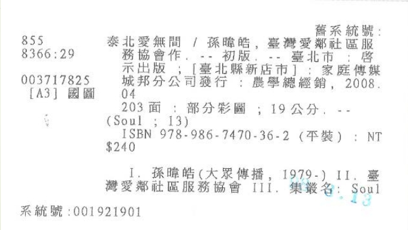

定義：可被明確指認的對象。
例子：作者、作品、出版社、主題、地點、時代或館藏單件。
知識圖譜是一種用實體和關係來組織知識的方法。對圖書館來說，它讓一筆筆書目紀錄背後的作者、作品、版本、主題與館藏，變成可以被連結與探索的知識網絡。
知識圖譜不是要畫出漂亮的圖，而是把知識拆成可辨識的東西，並清楚說明它們之間的關係。 當不同東西間的關係被清楚命名，資料就不只是文字清單，而能被查詢、連結、比較與重複使用。
知識圖譜是在組織東西之間的關係。要做到這件事，必須先把資料拆成幾個基本元素：哪些是被描述的對象（實體），哪些是對象之間的連結（關係），哪些只是用來補充描述的資料值（屬性）。
定義：可被明確指認的對象。
例子：作者、作品、出版社、主題、地點、時代或館藏單件。
定義：實體之間的語意連結。
例子：創作、翻譯、改編、出版、屬於、評論或以某主題為內容。
定義：描述實體本身的資料值。
例子：名稱、日期、語言、識別碼、版本、頁數或出版年。
下面是三個在生活情境中的實體、關係、屬性三元素描述例子。
家、房間、家具都可以是實體，位置與包含關係把它們連起來。
書桌 → 位於 → 書房
實體：書桌、書房
關係：位於
屬性：材質、尺寸、顏色
人、組織、事件可以被連成一張關係網，用來描述參與、任職或合作。
小明 → 任職於 → 圖書館
實體：小明、圖書館
關係：任職於
屬性：職稱、到職日
商品、品牌、類別與價格可以被拆開，讓系統知道使用者買了什麼類型的東西。
咖啡豆 → 屬於 → 食品
實體：咖啡豆、食品
關係：屬於
屬性：品牌、重量、價格
圖書館可以用知識圖譜，把編目累積的知識結構變得更容易被機器理解，也更容易和外部資料互通。下面的圖呈現的是傳統書目紀錄的樣子。分類號、題名、作者、出版者、出版年、頁數、叢書、ISBN 和系統號都集中在同一筆紀錄中，方便館員描述與讀者查找。
傳統書目紀錄在描述資源時，會把題名、作者、出版項、主題標目、分類號、館藏位置都被整理在固定欄位中，形成一整筆可供查找與管理的紀錄。

如果改用知識圖譜的觀點，可以從這張卡片抽出具體的實體與關係。差異不在於資料內容變了，而是資料從一筆紀錄中的欄位，轉成可以彼此連結的知識節點。
知識圖譜會把書名、作者、合作機構、出版地、發行者、叢書和識別碼分別辨識出來，再用明確關係把它們連起來。
這裡要先分清楚節點和屬性。節點通常是可以再被查詢、連到其他資料、或和其他資源建立關係的對象。屬性則比較像貼在某個節點上的描述值，用來幫助系統辨識、篩選、排序或區分資料。
不是書目紀錄中的每個欄位都需要變成另一個節點。例如出版年、頁數、尺寸、ISBN、價格和系統號，主要是在描述泰北愛無間這個書目資源本身。這些資料適合作為屬性。
一筆 MARC 或 OPAC 紀錄通常看起來像一個完整包裹；知識圖譜則會問：包裹裡有哪些不同的東西？哪些是人？哪些是作品？哪些是版本？哪些只是描述值？
西遊記是中國古典章回小說，敘述唐僧取經路上，孫悟空、豬八戒、沙悟淨等角色同行降妖除魔的故事。它有多種版本、改寫本、譯本等等。如果只看一筆書目紀錄，我們可能看到的是題名、作者、出版者、年代與主題。換成知識圖譜的眼光，這些欄位會被看成一組可以連起來的知識陳述。
這樣做看起來是把一筆紀錄切得更零碎，但因為實體之間的關係被建立起來，不同紀錄中的人物、作品、版本與單件就可以彼此串接，形成一個更大的查詢網。使用者不只查到一筆紀錄，也能沿著關係找到同一作者的其他作品、同一作品的不同版本，以及某個版本在館內的不同單件。
| 書目資料中的資訊 | 圖譜中的角色 | 資訊組織要做的事 |
|---|---|---|
吳承恩 |
人物實體 | 確認名稱指向哪一個人，並讓使用者能找到吳承恩的其他作品。 |
西遊記 |
作品實體 | 把作品本身和不同版本、譯本、改寫本、改編本串接起來。 |
某出版社 2020 年版 |
版本或具體呈現 | 連回它所呈現的作品，也能連到同一版本的不同館藏單件。 |
本館條碼 A001 |
館藏單件實體 | 表示館內實際持有的一件資源，並連到所在館藏位置與借閱狀態。 |
主題不一定只是文字標籤。在知識圖譜中，主題概念也可以成為實體，因為它能和許多作品、分類系統、相關主題或外部知識庫連在一起。這樣一來，使用者查詢某個主題時，不只會找到包含相同文字的紀錄，也能找到被同一主題概念連接起來的資源。
從一本書延伸到同作品的其他版本、譯本、評論與改編。
同名作者、不同譯名或不同標題可以靠實體識別降低混淆。
本館資料可以接到 VIAF、Wikidata、Library of Congress 或 OCLC 等資料源。
資料不只服務館藏查詢，也能被研究、教學、展示與其他系統使用。
看完本單元，你只要先記住一句話：圖書館知識圖譜的第一步，是把一筆紀錄中的字串整理成可以被辨識、命名與連結的實體關係。